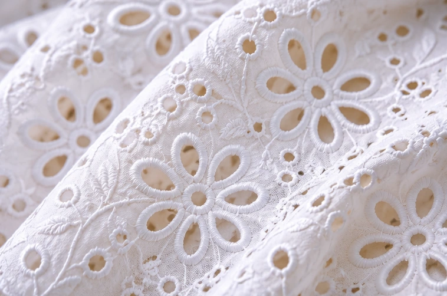

DIRECT MANUFACTURER FROM INDIA
Cotton.
Schiffli.
Crafted for
the World.
Manufacturer & exporter of premium women's western wear — crafted in cotton, Schiffli, embroidery, eyelet and printed fabrics for global wholesale buyers.
NOIDA, INDIA · GLOBAL WHOLESALE PARTNERSHIPS
♧Direct ManufacturerOwn Manufacturing Unit — No Middleman
✺27+ Years of ExperienceIn Apparel Manufacturing & Exports
♧Women's Western WearDresses, Tops, Sets, Resort Wear
❀Schiffli & Embroidery SpecialistCutwork, Eyelet & Detailed Craft
◎Exporting WorldwideUSA, Canada, Europe, Latin America & More
OUR COLLECTIONS
Contemporary
Women's Wear
Versatile, breathable and trend-driven collections in cotton, Schiffli, embroidered and printed fabrics.
View All Collections →THE MANUFACTURING JOURNEY
From Fabric
to Finished Apparel
Explore the stages involved in developing and producing women's apparel for wholesale buyers.
Explore Manufacturing →
CRAFT & DETAIL
Schiffli.
Made to be noticed.
Explore eyelet, cutwork and embroidered cotton fabrics for distinctive dresses, tops and coordinated collections.
Explore Schiffli Styles →LET'S BUILD YOUR NEXT COLLECTION